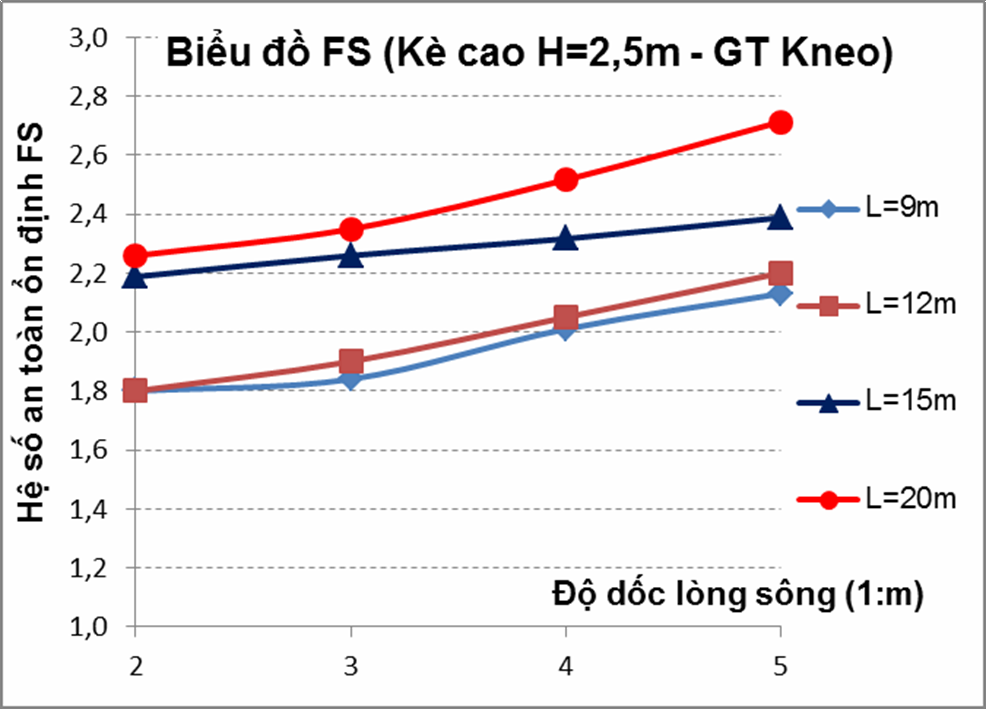
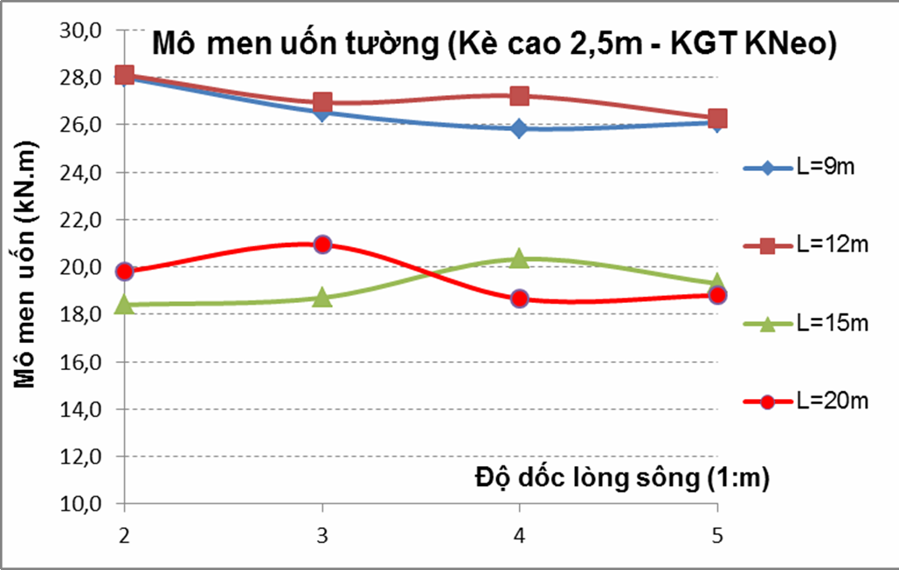
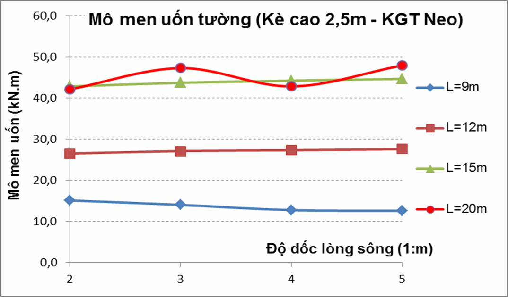
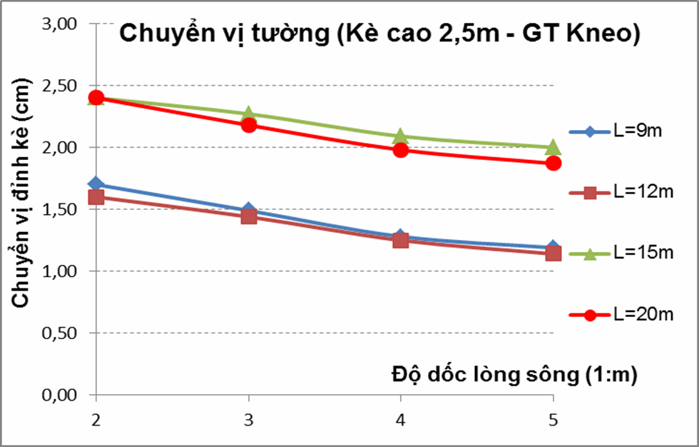
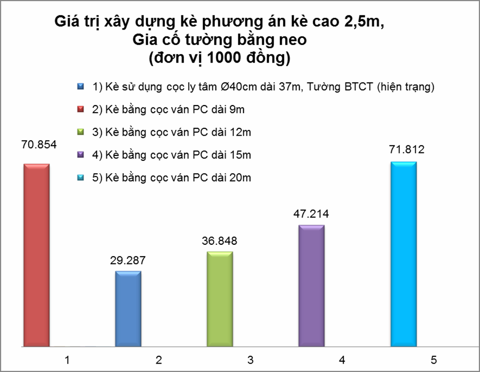
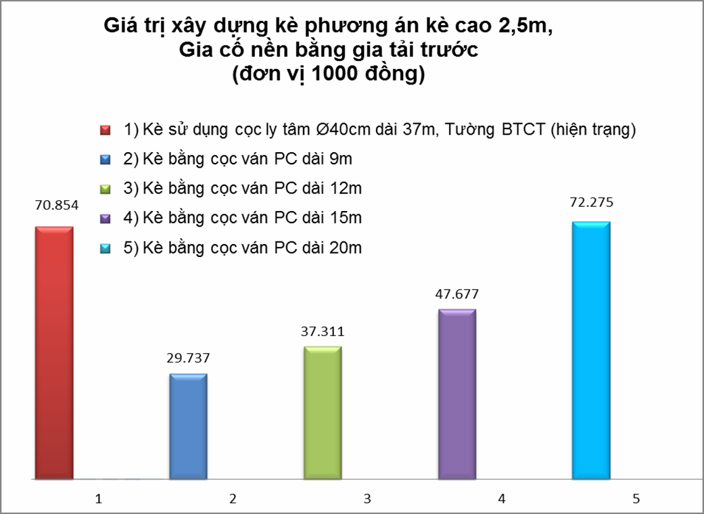

CÔNG TY CỔ PHẦN THƯƠNG MẠI CỬA ÂU

Tin tức & Sự kiện

.jpg)

Hotline hỗ trợ

- Website của CÔNG TY CỔ PHẦN THƯƠNG MẠI CỬA ÂU
-
Email: congtycuaau8386@gmail.com
0934640601
Liên hệ tư vấn Sản phẩm cống bê tông:
*Mr.Hoàng Sơn: 0988.563.102
*Mr. Ngọc Hiển: 098.554.7136
*Mr. Thượng Hải: 08.666.22.123
Thư viện video
Cọc ván cừ bê tông cốt thép dự ứng lực
Cập nhật: 12-05-2020 08:07:58 | Tin tức | Lượt xem: 10416
Cọc ván PC được ứng dụng vào Việt Nam từ năm 1999 tại cụm công trình nhiệt điện Phú Mỹ ở các hạng mục hệ thống các kênh dẫn chính và các kênh nhánh với tổng chiều dài cừ 42.000m chiều rộng 45m, chiều sâu 8,7m đưa nước từ sông Thị Vải vào để giải nhiệt cho các Turbin khí. Các công trình lấn biển ở tỉnh Kiên Giang, Quảng Ninh, kè bờ sông Đồng Nai khi sử dụng cọc ván PC này cũng cho kết quả tốt. Mặc dù cọc ván PC đã được ứng dụng vào Việt Nam khá lâu nhưng khả năng áp dụng của nó chưa được nghiên cứu một cách đầy đủ, đặc biệt là tại các vùng đất yếu và rất yếu như khu vực đồng bằng sông Cửu Long. Hiện tại, một số công trình ven bờ như công trình kè sông Cần Thơ, sông Trà Nóc vẫn áp dụng kết cấu cổ điển là tường chắn trên nền cọc BTCT (tường cao, đất yếu) hay cọc cừ tràm (tường thấp, đất tốt) để gia cố và bảo vệ bờ cho dù phương pháp này có nhiều nhược điểm như khối lượng vật liệu lớn, khả năng chống đẩy ngang thấp, thời gian thi công kéo dài.
Cọc ván bê tông được cung cấp tại: Hưng yên, Hải Dương, Hải Phòng, Quảng Ninh, Hà Nam, Nam Định, Thái Bình, Bắc Ninh, Bắc Giang, Lạng Sơn, Hà Nội, Sơn Tây, Vĩnh Phúc, Phú Thọ, Thái Nguyên, Yên Bái, Hòa Bình, Thanh Hóa,…
CỌC VÁN CỪ BÊ TÔNG CỐT THÉP DỰ ỨNG LỰC, KHẢ NĂNG ỨNG DỤNG VÀO CÔNG TRÌNH KÈ TRÊN NỀN ĐẤT YẾU
TS. NGUYỄN BẢO VIỆT - Trường Đại học Xây dựng Hà Nội
Tóm tắt: Khả năng ứng dụng của cọc ván cừ bê tông cốt thép dự ứng lực, cọc ván PC, vào công trình kè trên nền đất yếu được nghiên cứu trong bài báo này. Các phân tích được thực hiện cho công trình kè sông Trà Nóc, Tp. Cần Thơ, nơi có nền đất yếu khá đặc trưng của đồng bằng sông Cửu Long. Bài báo đã đưa ra 3 phương án thiết kế cho kè dùng cọc ván PC là: Không gia cố; Gia cố tường bằng neo và Gia cố nền bằng gia tải trước. Các giả thiết về chiều dài cọc và độ dốc lòng sông khác nhau đã được nghiên cứu. Kết quả tính toán cho thấy, nếu không gia cố nền, công trình sẽ có biến dạng lún lớn trên 60cm, mặc dù chuyển vị đỉnh kè của phương án có neo khá nhỏ. Trong tất cả các trường hợp nghiên cứu, công trình đều đảm bảo độ ổn định với hệ số an toàn khá cao, FS>1,7 và khả năng chịu uốn nứt khi nội lực của tường cừ nhỏ hơn nhiều so với khả năng chịu uốn nứt của cọc ván PC. Việc phân tích điều kiện kinh tế cho thấy phương án kè sử dụng cọc ván PC với phương án thiết kế và chiều dài hợp lý có thể giảm đến gần 60% giá thành so với phương án truyền thống.
1.Giới thiệu
Cọc ván cừ bê tông cốt thép (BTCT) đúc sẵn dự ứng lực, cọc ván PC, được chế tạo lần đầu bởi công ty P.S. Mitsubishi (Nhật Bản) cách đây hơn 50 năm. Cọc được thiết kế với nhiều hình dạng mặt cắt khác nhau như dạng phẳng; dạng sóng, … có khớp liên kết để khi hạ cọc xuống liên tiếp chúng có thể kết nối thành một kết cấu tường chắn. Trong vòng 20 năm qua, kết cấu tường chắn sử dụng cọc ván PC đã được áp dụng khá nhiều ở các nước Đông Nam Á trong đó có Việt Nam để bảo vệ các công trình ven sông kết hợp với việc chống xói lở bờ sông, công trình hố đào sâu, hệ thống kè các đường giao thông có địa hình bất lợi, hệ thống các đê, cống, đập và các cảng sông, biển,…
Cọc ván PC được ứng dụng vào Việt Nam từ năm 1999 tại cụm công trình nhiệt điện Phú Mỹ ở các hạng mục hệ thống các kênh dẫn chính và các kênh nhánh với tổng chiều dài cừ 42.000m chiều rộng 45m, chiều sâu 8,7m đưa nước từ sông Thị Vải vào để giải nhiệt cho các Turbin khí. Các công trình lấn biển ở tỉnh Kiên Giang, Quảng Ninh, kè bờ sông Đồng Nai khi sử dụng cọc ván PC này cũng cho kết quả tốt.
Mặc dù cọc ván PC đã được ứng dụng vào Việt Nam khá lâu nhưng khả năng áp dụng của nó chưa được nghiên cứu một cách đầy đủ, đặc biệt là tại các vùng đất yếu và rất yếu như khu vực đồng bằng sông Cửu Long. Hiện tại, một số công trình ven bờ như công trình kè sông Cần Thơ, sông Trà Nóc vẫn áp dụng kết cấu cổ điển là tường chắn trên nền cọc BTCT (tường cao, đất yếu) hay cọc cừ tràm (tường thấp, đất tốt) để gia cố và bảo vệ bờ cho dù phương pháp này có nhiều nhược điểm như khối lượng vật liệu lớn, khả năng chống đẩy ngang thấp, thời gian thi công kéo dài.
Cọc ván PC đã được sử dụng khá hiệu quả trong các kết cấu kè bờ sông. Một số dạng kè, tường sử dụng cọc ván PC có thể thấy trong hình 1. Trong phạm vi của mình, bài báo tập trung nghiên cứu khả năng áp dụng kết cấu cọc ván PC vào dự án kè sông Trà Nóc với nền đất yếu đặc trưng của vùng đồng bằng sông Cửu Long với chiều cao tường thông dụng 2,5m.

Hình 1. Một số dạng kết cấu kè bằng cọc ván PC, [2]
2.Cọc ván cừ Bê tông cốt thép đúc sẵn dự ứng lực (cọc ván PC)
2.1Cấu tạo cọc ván PC
Cọc ván PC có nhiều dạng khác nhau như dạng sóng; dạng phẳng tuy nhiên dạng sóng W là loại thường gặp nhất. Hình 2 thể hiện cấu tạo cừ PC SW600B với mặt cắt dạng W và chiều dài 12m. Trong thực tế cọc ván PC dạng W có nhiều loại với chiều cao khác nhau từ W120 (cao 120mm) đến W600 (cao 600mm) và chiều dài từ 6m đến 28m. Bề rộng của cọc được chế tạo định hình với kích thước 996mm. Cọc ván PC có cốt chủ thường là cốt thép dự ứng lực loại tao cáp 12,7mm, số lượng tao cáp tuỳ theo chiều dài của cọc.
Hình 2. Cấu tạo cừ PC dạng chữ W điển hình [2]
Với cấu tạo như vậy cọc ván PC có nhiều ưu điểm:
- Khả năng chống chịu lực tốt theo thời gian;
- Độ cứng chống uốn lớn do có hình dạng (W) tối ưu về kết cấu so với cọc vuông BTCT thường, do đó chịu được mômen lớn hơn, chuyển vị ngang ít hơn;Cọc ván PC với tiết diện W có thể làm tăng lực ma sát đất-cọc từ 1,5~3 lần so với loại cọc đặc có cùng diện tích tiết diện ngang (khả năng chịu tải của cọc theo đất nền tăng);
- Sử dụng vật liệu cường độ cao (bê tông, cốt thép) nên tiết kiệm vật liệu giảm giá thành sản xuất.
- Cường độ chịu lực cao nên khi thi công hiện tượng vỡ đầu cọc được hạn chế;
- Việc chế tạo trong nhà máy nên chất lượng cọc được kiểm soát tốt;
- Thi công nhanh với xà lan và cẩu vừa chuyên chở vừa thi công hạ cọc. Không cần làm tường chắn tạm để ngăn nước tạo mặt bằng thi công;
- Đoạn cọc chế tạo có thể có chiều dài lớn đến 28m nên hạn chế được số lượng mối nối;
- Công trình sau khi hoàn thành có dạng 1 bức tường bê tông kín nhẵn nên có khả năng chống xói cao đồng thời có mỹ quan đẹp;
- Có thể ứng dụng trong nhiều điều kiện địa chất khác nhau;
- Giá thành dễ chấp nhận so với ứng dụng công nghệ truyền thống.
Tuy nhiên cọc ván PC cũng có một số nhược điểm như:
- Đòi hỏi thiết bị thi công chuyên nghiệp như búa rung, búa thuỷ lực, máy phun nước áp lực,...;
- Không phù hợp với công trình có dạng gấp khúc, đường cong có bán kính nhỏ;
- Chi tiết nối phức tạp có thể làm hạn chế độ sâu hạ cọc.
2.2 Phương pháp hạ cọc ván PC
Cọc ván PC có thể được thi công hạ xuống đất theo một số phương pháp như:
- Thi công bằng búa rung kết hợp xói nước;
- Đóng bằng búa diezel kiểu ống, búa rung va đập hay búa thủy lực.
Trong các phương pháp thi công trên thì việc hạ cọc bằng búa rung kết hợp với xói nước thường được dùng nhất vì nó có thể giúp việc hạ cọc dễ dàng xuống tới độ sâu thiết kế với lực tác động thi công lên cọc nhỏ. Việc phun nước áp lực cao xuống đáy cừ để xói đất giúp cọc đi xuống được thực hiện qua các ống đặt sẵn thông từ đầu cừ đến đáy cừ (cỡ D15-D17). Phương pháp thi công bằng búa rung kết hợp xói nước gồm có các bước chính sau:
- Chuẩn bị hệ thống thiết bị bao gồm cần cẩu và búa rung cùng máy bơm áp tạo tia nước áp lực cao (12MPa);
- Lắp đặt và định vị khung dẫn hướng, dùng cẩu móc vào phía đỉnh cọc để di chuyển đến vị trí cần hạ cọc. Dưới trọng lượng của bản thân cọc và sự xói đất do tia nước áp lực cao mà cọc sẽ được hạ xuống với chiều sâu ban đầu;
- Lắp búa rung vào đầu cọc kết hợp với tia nước để hạ cọc đến cao độ thiết kế;
- Đổ dầm bê tông liên kết cố định đỉnh cọc.
2.3 Phương pháp tính toán, phân tích kết cấu kè sử dụng cọc ván PC
Trong nghiên cứu này, phần mềm Plaxis 8.2 chuyên dụng của ngành địa kỹ thuật với nhiều mô hình nền tiên tiến được sử dụng để phân tích độ ổn định, chuyển vị tổng của kết cấu cũng như chuyển vị ngang và nội lực trong cọc ván PC.
- Mô hình nền Mohr-Coulomb được sử dụng để mô phỏng đất, đất đắp;
- Phần tử neo (Anchor) dùng để mô tả phần tử neo;
- Phần tử bản (Plate) được dùng để mô phỏng kết cấu cọc ván PC.
3.Tuyến kè sông Trà Nóc
3.1 Giới thiệu công trình
Công trình kè sông Trà Nóc được xây dựng nhằm bảo vệ và ngăn chặn tình trạng sạt lở bờ sông, phòng tránh những thiệt hại về tính mạng, tài sản của nhân dân đồng thời góp phần tạo cảnh quan đô thị thông thoáng, khang trang cho quận Bình Thủy. Tuyến kè có tổng chiều dài 488m. Cao độ đỉnh kè từ 2,5~3,0m và cao độ chân kè là 0,5m theo mốc chuẩn Hòn Dấu. Phần sau kè được tôn cao lên đến cốt + 2,3 m để làm vỉa hè và đường giao thông cho xe thô sơ với chiều rộng 10~12m. Mặt cắt kè điển hình được thể hiện trong hình 3.
3.2 Điều kiện địa chất, thủy văn
Địa tầng trong khu vực khảo sát tương đối ổn định, biến đổi nhỏ. Kết hợp kết quả khảo sát hiện trường và kết quả thí nghiệm trong phòng có thể chia địa tầng trong phạm vi khảo sát đến 38m thành 3 lớp chính như sau (bảng 1).
Các phân tích được tiến hành với mực nước sông thấp ở mức - 0,8m. Do sông có chế độ thủy triều thấp nên việc phân tích ổn định cho trường hợp nước sông rút nhanh có thể bỏ qua.
Bảng 1. Cấu tạo địa tầng khu vực sông Trà Nóc
|
Tên lớp đất |
Trọng lượng riêng (g) |
Góc ma sát trong (j’) |
Lực dính (c’) |
Mô đun biến dạng (E0) |
Chiều dày lớp (h) |
|
Lớp 1b: Bùn sét, xám nâu, chảy |
15,3kN/m3 |
16,33o |
17,2kPa |
706kPa. |
12m |
|
Lớp 2a: Sét pha, xám nâu, chảy |
17,53kN/m3 |
19,47o |
22,32kPa |
1304kPa |
18m |
|
Lớp 2b: Sét pha, xám nâu, dẻo chảy |
18kN/m3 |
7o |
15,6kPa |
1687kPa |
8m |
3.3 Thiết kế công trình hiện trạng
Hiện tại kè đã được xây dựng xong với kết cấu móng sử dụng cọc BTCT thường hoặc cọc ly tâm đúc sẵn và bản đáy kè và tường kè làm bằng BTCT đổ tại chỗ. Bản chống tường kè bằng BTCT với khoảng cách 3 m. Việc chống xói lở chân kè được thực hiện bằng xây đá hộc dày 40cm. Ưu điểm của thiết kế này

Hình 3. Cấu tạo kè sông Trà Nóc hiện trạng
Là phương pháp thi công quen thuộc tận dụng được các thiết bị thi công, sản xuất sẵn có, nhiều nhà thầu có khả năng làm được tăng tính cạnh tranh. Tuy nhiên nó có nhiều nhược điểm như: Việc thi công tương đối phức tạp do phải làm tường chắn tạm để ngăn nước tạo mặt bằng thi công; Khả năng chống xói lở thấp; Kinh phí duy tu bảo dưỡng nhiều.
Hình 4. Phương án đề xuất kè sông Trà Nóc sử dụng cọc ván PC
3.4 Các phương án sử dụng cọc ván PC
Tính khả thi của việc sử dụng cọc ván PC cho kết cấu kè được nghiên cứu với việc sử dụng cọc ván PC SW600B (hình 2) có các thông số tính toán EA=3’734’400 kN/m; EI=42’436 kNm^2/m. Do nền đất yếu nên phương án gia cố nền đất, tường cũng được xét đến với 3 trường hợp nghiên cứu: Không gia cố, gia cố tường bằng neo và gia cố nền bằng gia tải trước.
Với 3 phương án đề xuất, việc thi công kè sử dụng cọc ván PC được chia thành các giai đoạn như sau:
- Giai đoạn 0: Gia tải trước phần đất nền sẽ đắp đất với tải trọng đúng bằng trọng lượng của đất đắp. Giai đoạn này chỉ áp dụng cho phương án gia cố nền bằng cách gia tải trước;
- Giai đoạn 1: Thi công hạ cọc ván PC; Nếu là phương án 2, neo thép sẽ được thi công ở bước này với thiết kế 1 tao cáp 12,7mm dài 10m, khoảng cách giữa các neo là 3m, 1 đầu được cố định có EA=8’433 kN/m;
- Giai đoạn 2: Thi công tôn nền sau lưng tường kè đất cao độ thiết kế;
- Giai đoạn 3: Kè hoàn thành chịu các tải trọng, tác động trong quá trình sử dụng.
4.Tính toán phương án cọc ván PC cho tuyến kè sông Trà Nóc bằng phần mềm Plaxis
Tác giả sử dụng phần mềm Plaxis 8.2 để tính toán phân tích cả 3 phương án đề xuất với một số yếu tố ảnh hưởng bao gồm độ dốc lòng sông với 4 trường hợp m = 1:2; 1:3; 1:4; 1:5 cùng với 4 trường hợp chiều dài cọc ván PC thay đổi L= 9m; 12m, 15m, 20m.
Hình 5 thể hiện mô hình tính toán trong Plaxis.

5.Kết quả và nhận xét
Kết quả phân tích chuyển vị tổng và hệ số an toàn tổng thể của công trình thể hiện trong hình 6, hình 7 và hình 8 trong các trường hợp lòng sông có độ dốc thay đổi m = 1:2; 1:3; 1:4; 1:5 cùng với chiều dài cọc ván PC thay đổi với L = 9m; 12m, 15m, 20m.
Hình 6, hình 7 cho thấy chuyển vị tổng của công trình rất lớn khoảng 64~66cm (do nền đất có tính biến dạng lớn) nếu không được gia cố nền. Trong phạm vi nghiên cứu này, phương pháp gia cố nền bằng gia tải trước đã được tính toán với kết quả tốt khi chuyển vị tổng giảm xuống chỉ còn khoảng 11~12cm (hình 8). Về mặt chuyển vị tổng có thể thấy rằng độ dốc của lòng sông và chiều dài của cừ có ảnh hưởng rất ít (dưới 10%). Mặt khác, kết quả tính toán cũng chỉ ra rằng hệ số an toàn tổng thể của công trình tăng khi độ dốc lòng sông giảm. Độ tăng đến khoảng 25%, khi độ dốc thay đổi từ m=1:2 xuống m=1:5 cho cả 3 trường hợp nghiên cứu là không gia cố, gia cố tường bằng neo và gia cố nền bằng gia tải trước. Khi chiều dài cọc ván PC thay đổi từ 9 lên 20m thì hệ số an toàn tăng khoảng 15% với trường hợp không gia cố; 40% với trường hợp gia cố tường bằng neo và 25% với trường hợp gia cố nền bằng gia tải trước. Tuy nhiên có thể thấy rằng trong tất cả các trường hợp xem xét, hệ số an toàn đều cao (FS > 1,7) thỏa mãn yêu cầu về ổn định của công trình (FS = 1,4).


Hình 6. Chuyển vị tổng và hệ số an toàn ổn định - Không gia cố (L = chiều dài cừ)


Hình 7. Chuyển vị tổng và hệ số an toàn ổn định - Gia cố tường bằng neo (L = chiều dài cừ)
 |
 |
||
Hình 8. Chuyển vị tổng và hệ số an toàn ổn định - Gia cố nền bằng gia tải trước
Hình 9, hình 10, hình 11 thể hiện chuyển vị đỉnh kè và mô men lớn nhất trong tường tương ứng với các trường hợp lòng sông có độ dốc thay đổi m = 1:2; 1:3; 1:4; 1:5 cùng với chiều dài cọc ván PC thay đổi với L = 9m; 12m, 15m, 20m.
Kết quả phân tích cho thấy chuyển vị đỉnh kè là khá lớn từ 8~15cm nếu không được gia cố. Hai biện pháp gia cố neo cho tường và gia tải trước cho nền có hiệu quả khá lớn làm giảm chuyển vị đỉnh kè xuống lần lượt chỉ còn 2,0~3,5cm và 1,1~2,4cm. Một điều thú vị là chiều dài cọc cừ càng lớn thì chuyển vị đỉnh kè cũng lớn theo, độ tăng có thể tới gần 30%. Hiện tượng này có thể được giải thích là do khi tường có chiều dài lớn hơn nó sẽ phải chịu nhiều áp lực đất hơn nên chuyển vị lớn hơn. Chính vì vậy mà lực tác dụng vào đất nền được giảm bớt phần nào dẫn đến hiện tượng chuyển vị tổng giảm xuống như trên đã phân tích. Mô men trong tường có giá trị khá nhỏ 18~28kN.m/m với trường hợp không gia cố; 12~50kN.m/m với trường hợp gia cố tường bằng neo và 13~17kN.m/m với trường hợp gia cố nền bằng gia tải trước. Mặc dù giá trị mô men chịu ảnh hưởng nhiều khi chiều dài cọc cừ thay đổi đặc biệt khi sử dụng biện pháp gia cố tường bằng neo, giá trị tăng khá nhiều. Tuy nhiên với khả năng chịu uốn nứt của cọc ván PC SW600 là 600kN.m/m thì loại cọc cừ này hoàn toàn đủ khả năng chịu mô men uốn trong tường.


Hình 9. Chuyển vị đỉnh và mô men uốn trong kè cao H=2,5m – Không gia cố
 |
|||
 |
|||
Hình 10. Chuyển vị đỉnh và mô men uốn trong kè cao H=2,5m – Gia cố tường bằng neo
 |
 |
||
Hình 11. Chuyển vị đỉnh và mô men uốn trong kè cao H=2,5m - Gia cố nền bằng gia tải trước
Các kết quả phân tích cho thấy nếu nền đất không được gia cố công trình sẽ có biến dạng lún lớn gây ra rủi ro trong quá trình sử dụng. Biện pháp gia cố tường bằng neo chỉ có tác dụng tăng tính ổn định của công trình và giảm chuyển vị ngang của đỉnh tường cừ chứ hầu như không có tác dụng giảm độ lún. Vì vậy, biện pháp gia cố nền để giảm lún là cần thiết đối với trường hợp nền đất yếu. Sau khi nền đất được gia cố giảm lún thì cọc ván cừ chỉ cần dài 9,0m (cắm vào đất 6,5m) là thỏa mãn các yêu cầu về ổn định và biến dạng của công trình.
Để so sánh điều kiện kinh tế, các công trình được lập dự toán tính giá trị (khối lượng xây lắp, biện pháp thi công,…) theo các quy định hiện hành. Hình 13 cho thấy đối với trường hợp nghiên cứu kè sông Trà Nóc, phương án kè sử dụng cọc ván PC tốt hơn rất nhiều so với phương pháp truyền thống, công trình hiện trạng, (theo [1]). Với phương án cọc ván PC dài 9,0m, giá thành công trình đã giảm so với giá trị công trình theo phương pháp truyền thống tới gần 60%.


Hình 12. Giá trị công trình tính cho 1m dài kè
6.Kết luận
Tính khả thi của công trình kè sử dụng cọc ván PC cho sông Trà Nóc, thành phố Cần Thơ nơi có nền đất yếu đặc trưng của vùng đồng bằng sông Cửu Long đã được nghiên cứu với 4 trường hợp độ dốc của lòng sông m= 1:2; 1:3; 1:4; 1:5 cùng với 4 chiều dài cọc ván PC L= 9m; 12m, 15m, 20m trong 3 phương án thiết kế 1) Không gia cố; 2) Gia cố tường bằng neo 3) Gia cố nền bằng phương pháp gia tải trước (48 trường hợp tính toán).
Dựa trên các kết quả phân tích tính toán, một số kết luận có thể rút ra trong nghiên cứu này như sau:
- Với nền đất yếu, việc gia cố nền đất nhằm giảm biến dạng lún là cần thiết để giảm thiểu sự rủi ro cho công trình trong quá trình sử dụng;
- Chiều tường tăng, chuyển vị công trình giảm không đáng kể (dưới 10%) nhưng chuyển vị của tường lại tăng khá có thể tới gần 30%. Ngoài ra, hệ số an toàn cũng tăng đáng kể từ 15% ~40% tùy thuộc vào các phương án thiết kế nhưng trong tất cả các trường hợp, điều kiện về ổn định đều được thỏa mãn (FS> 1,4);
- Mô men uốn trong tường cừ có thay đổi tùy thuộc vào phương án thiết kế, đặc biệt là phương pháp gia cố tường bằng neo nhưng đều rất nhỏ, khoảng 10%, so với khả năng chịu uốn nứt của cấu kiện cọc ván PC.
- Phương án kè sử dụng cọc ván PC với chiều dài hợp lý có thể đem lại hiệu quả kinh tế lớn, giá thành có thể giảm đến gần 60% so với phương án truyền thống.
TÀI LIỆU THAM KHẢO
- TRƯƠNG THANH NHÃ (2014), “Đánh giá khả năng áp dụng cọc ván BTCT dự ứng lực cho kết cấu kè sông khu vực Tp. Cần Thơ”, Luận văn thạc sỹ, Đại học Xây dựng.
- “Cọc ván Bê tông dự ứng lực, chỉ dẫn kỹ thuật”, Công ty Cổ phần Beton 6, 2014.
- “Báo cáo kết quả khảo sát địa kỹ thuật xây dựng công trình: Kè sông chợ Trà Nóc, địa điểm: Khu vực 2, phường Trà Nóc, quận Bình Thủy, Tp. Cần Thơ”, Công ty TNHH Tư vấn – Kiểm định xây dựng và môi trường GCE, 2012.
- “Hồ sơ thiết kế kỹ thuật thi công Công trình: Kè sông chợ Trà Nóc, địa điểm: Khu vực 2, phường Trà Nóc, quận Bình Thủy, Tp. Cần Thơ”, Viện kiến trúc quy hoạch Tp. Cần Thơ, 2013.
Ngày nhận bài: 5/03/2015
Ngày nhận bài sửa lần cuối: 23/03/2015.


.jpg)